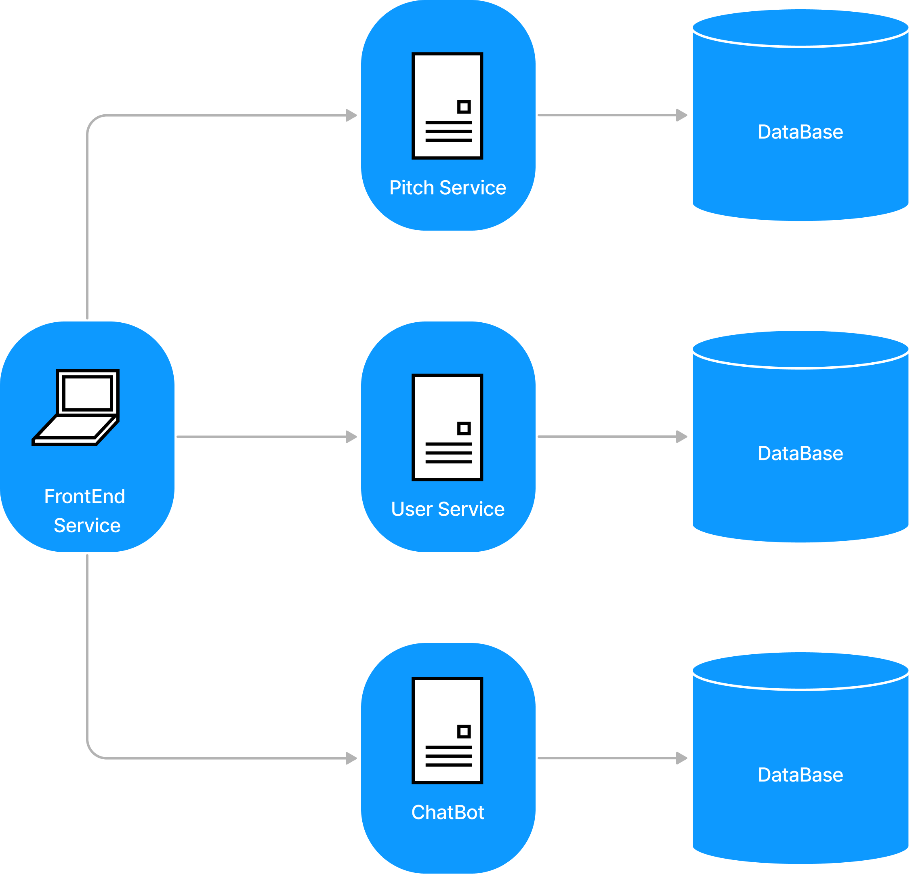

Arquitetura
1. Introdução
1.1. Finalidade
Este documento tem como objetivo fornecer uma visão geral da arquitetura do sistema web Pitch It!. Apresenta de forma clara o fluxo de dados, o comportamento da aplicação e como as partes se relacionam, bem como expor de maneira objetiva as decisões arquiteturais que foram tomadas em relação ao projeto.
1.2. Escopo
Este documento de arquitetura se aplica ao Pitch It!. Estão descritos neste documento os padrões de arquitetura adotados, frameworks e linguagens escolhidas.
1.3. Definições, Acrônimos e Abreviações
- API - Application Programming Interface: conjunto de rotinas e padrões de programação que viabiliza a comunicação entre dois sistemas ou plataformas distintas.
- HTTP - Hypertext Transfer Protocol: protocolo de transferência e comunicação de dados.
- Backend - Parte da aplicação responsável pela conexão com o banco de dados e gerência das informações que serão enviadas ao frontend.
- Frontend - Parte da aplicação responsável pela interação com o usuário, utilizando recursos consumidos do backend.
- SSP - Secretaria de Estado de Segurança Pública.
- SQL - Structured Query Language: Linguagem declarativa de busca para bancos de dados relacionais.
- JSON - JavaScript Object Notation
- REST - Representational State Transfer
2. Representação Geral da Arquitetura

A aplicação tem um cliente de frontend web feito em React com auxílio do Vite e três microserviços em seu backend.
O primeiro microserviço é o Pitch Service, uma API REST que encaminha a mensagem escrita pelo usuário descrevendo sua startup para uma IA com linguagem natural que entende o contexto e a partir dele gera um pitch de 5 minutos utilizando engenharia de prompt.
O segundo microserviço é o Chatbot Service, uma API REST que encaminha as dúvidas descritas pelo usuário logado para uma IA com linguagem natural que entende o contexto e devolve com a melhor resposta disponível.
O terceiro microserviço é o User Service, que trata todos os dados dos usuários os enviando para serem armazenados em um banco de dados relacional, MySQL.
As comunicações entre todos os componentes são feitas com o protocolo HTTP e o tipo de conteúdo transmitido dentro do sistema é documento JSON.
3. Tecnologias
O diagrama abaixo mostra quais são as tecnologias usadas em cada parte do sistema. Em seguida, essas tecnologias são descritas brevemente.
3.1. React
React é uma biblioteca JavaScript desenvolvida pelo Facebook para criar interfaces de usuário (UIs) dinâmicas e interativas. Utiliza uma abordagem baseada em componentes, permitindo que desenvolvedores construam componentes encapsulados que gerenciam seu próprio estado e se combinam para formar interfaces complexas.
3.2. Vite
Vite é uma ferramenta de build desenvolvida por Evan You, o criador do Vue.js, que oferece uma experiência de desenvolvimento rápida e eficiente para projetos web. Ele utiliza ESBuild para iniciar um servidor de desenvolvimento quase instantaneamente e oferece Hot Module Replacement (HMR) para atualizações de código em tempo real.
3.3. Tailwind CSS
Tailwind CSS é um framework CSS utilitário que facilita a criação de designs modernos e responsivos sem escrever CSS personalizado. Em vez de classes pré-estilizadas, Tailwind oferece uma vasta coleção de classes utilitárias de baixo nível que podem ser combinadas diretamente no HTML para construir qualquer design de forma eficiente.
3.4. MySQL
MySQL é um sistema de gerenciamento de banco de dados relacional (RDBMS) open-source amplamente utilizado, desenvolvido pela Oracle Corporation. Utiliza a linguagem SQL (Structured Query Language) para gerenciar e manipular dados em tabelas relacionais. MySQL é conhecido por sua alta performance, confiabilidade e facilidade de uso, sendo uma escolha popular para aplicações web, desde pequenos sites até grandes plataformas de e-commerce.
4. Requisitos e Restrições de Arquitetura
- Aplicação deve ser construída baseada na arquitetura de microsserviços, na qual o backend será desenvolvido em Java e o frontend em Vite + React.
- O aplicativo será funcional em notebooks e desktops com qualquer sistema operacional que tenha acesso à um navegador.
- O desktop necessita de conexão estável de internet para uso completo e atualizado do aplicativo.
5. Frontend
O frontend está sendo implementado com uma organização em que cada módulo possui responsabilidades bem definidas, facilitando assim a manutenção e evolução do código:
- App.tsx - Arquivo que chama o componente principal do app que são as rotas.
- src/ - Diretório que contém basicamente todo o código fonte.
- routes.tsx - Arquivo responsável por carregar todas as telas. Para isso ele utiliza os módulos de navigation e de screens.
- navigation/ - Diretório que controla o fluxo de navegação entre as telas através *tab bottom bar*. Então ele faz uso do componente de screens.
- screens/ - Contêm as telas da aplicação. Para que as telas funcionem corretamente, esse módulo utiliza os diretórios de services, de componentes e o de utils.
- services/ - Diretório que contém os endpoints necessários para realizar as requisões feitas no app.
- components/ - Inclue os componentes que são comuns às telas da aplicação. Os componentes podem ser modals, inputs de formulários, botões, etc.
- utils/ - Armazena funções utilitárias reutilizáveis que serão disponibilizadas para todo o frontend.
- hooks/ - Diretório onde estão os gerenciandores de estado do usuário
- @types/ - Onde ficam algumas tipagens internas customizadas
6. Referências
- JUNIOR, Cleber; LUI, Brian; HORINOUCHI, Lucas; SOUZA, Rômulo; HERONILDO, Francisco; TOYOSHIMA, Filipe; ALVES, Vitor; APOLINÁRIO, Jacó. Projeto HubCare: Documento de Arquitetura. Disponível em: https://cjjcastro.gitlab.io/2019-1-hubcare-docs/project/architecture-document/#5-visao-de-implementacao.
- LIMA, Alan; BERNARDO, Elias; MARQUES, Guilherme; BARREIROS, Leonardo; BLANCO, Matheus; FÉO, Pedro; RODRIGUES, Pedro; KADER, Saleh; SILVA, Sara; ALCÂNTARA, Shayane. Projeto QR Comer: Documento de Arquitetura. Disponível em: https://fga-desenho-2019-2.github.io/Wiki/seminario5/arquitetura/.
- MENDES, Iasmin; VALÉRIO, Renato; JOÃO, Lucas; DAVI, Gabriel; SOUZA, Sousa; MACIEL, Lucas; FERNANDES, Weiller; GOMES, Matheus. Projeto Indica AI: Documento de Arquitetura. Disponível em: https://fga-eps-mds.github.io/2018.2-IndicaAi//docs/2018/08/28/architecture-doc.html.
- MIGUEL, Alexandre; ALVES, Davi; GUEDES, Gabriela; GOULART, Helena; ROBSON, João; MENEZES, Leticia; GUILHERME, Luiz; SCHADT, Renan; VINICIUS, Rômulo; HUGO, Victor. Projeto Translate.me: Documento de Arquitetura. Disponível em: https://translate-me.github.io/docs/documentos/projeto/doc_de_arquitetura/.
Histórico de Revisão
| Data | Versão | Descrição | Autor |
|---|---|---|---|
| 25/06/2024 | 1.0 | Criação do documento | Lucas Lima Ferraz |